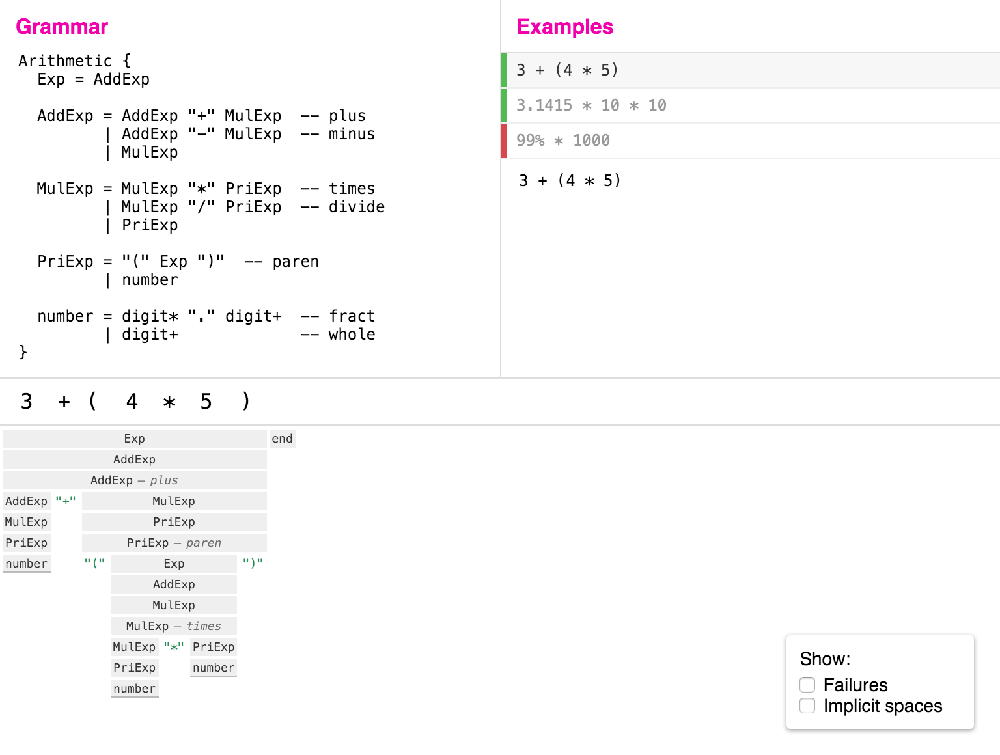
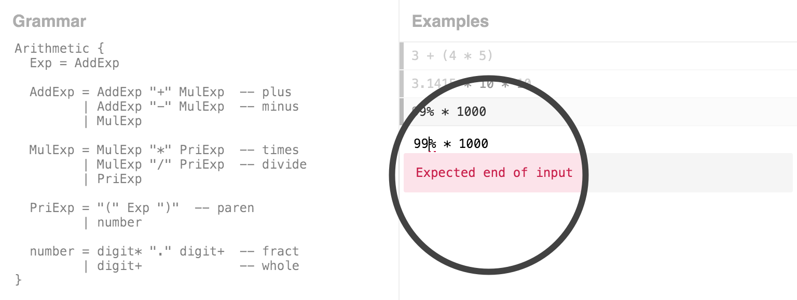
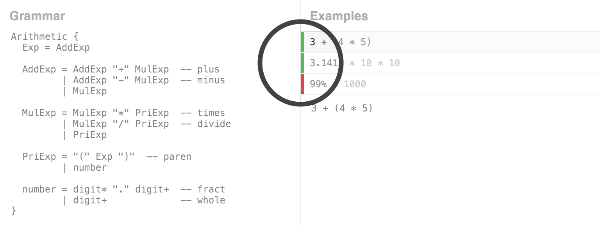
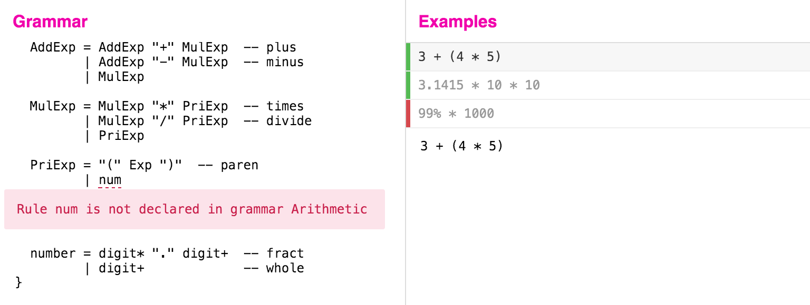
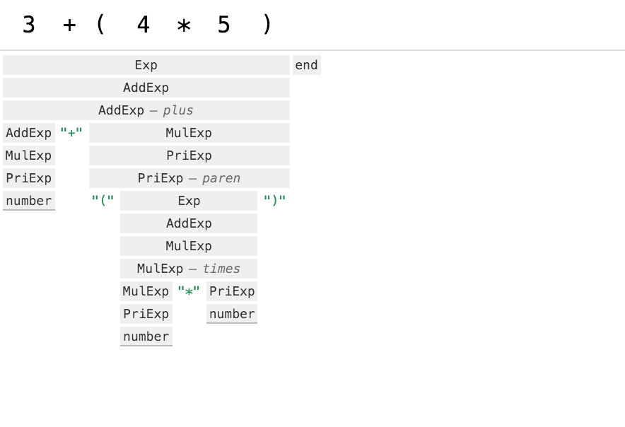
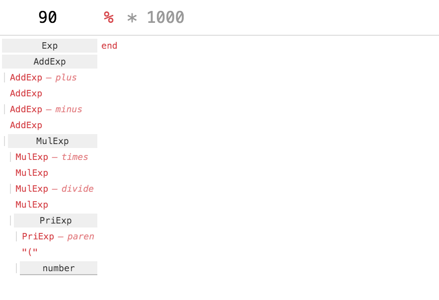
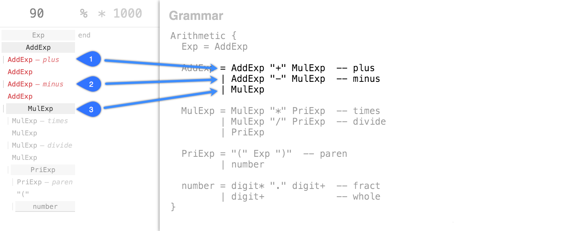
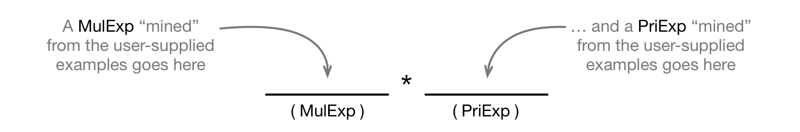

Language Hacking in a Live Programming Environment
1. Introduction
Live programming environments [Hancock 2003] enable programmers to better understand their code (even while they are writing or modifying it), catch and fix bugs earlier, and more. Much of this power comes from giving programmers support for:
- visualizing the execution of their programs [Victor 2012b],
- continuous feedback to see the effects of their changes instantly [McDirmid 2015], and
- writing code in the context of example inputs, to make programming more concrete [Victor 2012a].
We are interested in bringing the benefits of live programming to the domain of programming language prototyping and implementation. In this paper, we outline some ways in which the principles above could make the life of the “language hacker” easier. We demonstrate the application of these principles in the Ohm Editor, a tool we are building to support our new language implementation framework.
Ohm at a glance. Ohm builds on parsing expression grammars (PEGs) [Ford 2004] to give language designers and implementers a convenient way to prototype programming languages, i.e., write parsers, interpreters, compilers, etc. An Ohm grammar defines the syntax of a language, while semantic actions specify what to do with them. Unlike most other grammar-based tools — e.g., OMeta [Warth and Piumarta 2007] and Yacc [Johnson 1975] — Ohm completely separates grammars and semantic actions. This separation improves modularity, and makes both grammars and semantic actions easier to read and understand.
In grammar-based tools like Ohm and Yacc, the programmer writes grammars as well as semantic actions. While these are distinct activities that should be supported in different ways, the live programming principles above apply to both of them.
The rest of this paper is organized as follows. Section 2 gives an overview of the Ohm Editor. Sections 3 and 4 describe how we applied principles from live programming to improve the experience of writing grammars and semantic actions, respectively. Section 5 presents some ongoing work that we plan to present at the LIVE workshop, and Section 6 concludes.
2. Overview of the Ohm Editor
Below is a screenshot of the Ohm Editor, with a sample grammar of arithmetic expressions:

The editor consists of three panes:
- the grammar editor (top left),
- the list of examples (top right) that serve as test cases for developing and debugging the grammar, and
- the visualizer (bottom half), which shows how the selected example was parsed.
In the following two sections, we show how these components come together to provide a powerful environment for writing grammars and semantic actions.
3. Live Editing Grammars
Both the grammar pane and the examples pane are “live” and offer continuous feedback to the user as they type. In this section, we will describe this feedback and how it helps the user develop, debug, and understand grammars.
Editing Examples
As the user types in the example pane, the Ohm Editor continuously tries to match the example against the grammar. If it does not match the example successfully, a portion of the text is underlined in red to indicate where the error occurred. This is deliberately subtle so as to avoid interrupting the user while they are still typing. Once the user stops typing, if the text still fails to match, an error is shown after a brief delay:

If the example matches successfully, the resulting concrete syntax tree (CST) is shown in the visualizer pane. The visualizer is described in detail below.
Editing Grammars
When editing a grammar, there are a few forms of feedback that are relevant. First, it is useful to know whether the examples still match the grammar. Each example in the examples pane has a green or red indicator that shows whether or not it is accepted by the grammar:

As the user types, the editor continously tries to match each example against the current version of the grammar, appropriately updating the indicators either red or green. In this way, the Ohm Editor supports a basic form of “example-centric programming”, where the grammar can be developed in the context of a number of concrete examples. Rather than beginning with a grammar, the programmer may choose to start by writing one or more examples, and then develop the grammar to work with these examples.
Another form of feedback is provided when editing grammars: as the user types, the editor continuously checks that the grammar itself is syntactically valid. Just like in the example editor, any error is initially indicated with a dashed red line and, after a brief delay, a complete error message is shown:

Visualizer
When the selected example is accepted by the grammar, the Ohm Editor’s visualizer displays a
concrete syntax tree (CST) that represents the syntactic structure of the input, as defined by
the grammar. Below is the CST of the input 3 + (4 * 5):

This visualization is a variation on an icicle plot [Kruskal and Landwehr 1983]. It is also similar to a flame graph, which is often used in software profilers.
Nodes representing successful rule applications (e.g., Exp and AddExp) are depicted by
gray
rectangles and labeled with the name of the associated rule. Nodes that represent
successfully-matched string literals, e.g., "+", are shown in
green.
This visualization shares two important properties with typical icicle plots:
- A node’s children appear immediately beneath it. In this example, the
Exp node at the top level has a single child: anAddExp node. - The width of the node carries information. In this case, it shows how much of the input text was consumed by that node. More specifically, the text consumed by a node appears directly above it.
When the cursor is over a node, the portion of text consumed by that node is highlighted:
Our visualization differs from a standard icicle plot in at least two ways:
- The horizontal position of a node is important — it always lines up with the text consumed by that node.
- The width of the nodes is not determined by a linear scale; their relative widths are not comparable.
The reason for the latter point is that in order to keep the node labels readable, we ensure that each node is always at least as wide as its label. If necessary, we increase the letter spacing of the consumed input text to maintain the invariant that the text consumed by a node always appears directly above the node.
Since parse trees can get quite large, we enable the user to restrict the amount of information on screen by
collapsing the children of some nodes.
A dark gray bottom
border — as in the
Visualizing Failed Parses
When an input fails to match, it does not produce a parse tree. However, it is still helpful
to give the programmer some insight into why the parse failed. For this purpose, our visualizer
supports a “show failures” option. Here is an example of parsing the invalid input 90% * 1000:

In this mode, the visualization has the same structure as before: successful rule applications are gray, and align with the input that they consumed. But this structure is augmented with information about failed expressions, which are shown in red. Note that in practice, most parses (successful or not) consist of both successfully-matched expressions and failures.
To clarify the meaning of our “show failures” visualization, the image below shows the
correspondence between the children of the

So in the process of recognizing the input as an
AddExp , which fails;plus AddExp , which also fails; and finallyminus MulExp , which succeeds, consuming the substring90from the input stream.
When read from top to bottom and left to right, our “show failures” visualization shows each step that the grammar took in recognizing (or attempting to recognize) the input. Essentially, it “unrolls” the entire computation into a single, browseable structure. Unlike a stepping debugger, this visualization abstracts over time — it is one step higher on the ladder of abstraction [Victor 2011].
4. Live Editing Semantic Actions
In Ohm, a grammar determines the set of all valid inputs in a language, but it does not specify what to do with them. To do something other than recognize valid inputs, e.g., to generate an abstract syntax tree or interpret a program, the programmer must first create a semantics for that grammar. A semantics is a collection of operations and attributes for a given grammar.
This section outlines the Ohm Editor’s support for creating and editing operations and attributes. Our running example will be an “eval” operation that computes the value of an arithmetic expression.
Example-Driven Development
When the programmer creates an operation, they must specify how it behaves for each rule in the grammar. This is done by writing semantic actions. To make the task of writing semantic actions less tedious and abstract, and to shorten the feedback loop between the programmer and the computer, the Ohm Editor allows semantic actions to be written in the context of an example. The following sections illustrate how the Ohm Editor leverages examples to improve the experience of writing semantic actions.
Writing Semantic Actions Top-Down
Ohm evaluates operations in a top-down fashion. When the user adds a new operation to a semantics, it starts out without any semantic actions. In the video below, we see that the Ohm Editor helpfully points out what (if any) semantic actions still need to be specified before it can compute a result for the current input. This is similar to the “bookkeeping” provided by the Coq proof assistant.
Here, the programmer adds an operation called “eval” and the Ohm Editor points out that the first
CST node that is missing a semantic action, from a top-down perspective,
is
The programmer then adds the semantic action for
At this point, the Ohm Editor attempts to compute the value of the “eval” operation for the current
input and finds the next set of semantic actions that are missing:
Note that the value of the “eval” operation is shown immediately for each node, as an extension of the visualization described the previous section.
Improving Top-Down Development by Zooming
Writing semantic actions in a top-down style, as shown in the previous section, often requires the
programmer to write several semantic actions before they can finally see a result. This goes against
the principle of continuous feedback; it would be better if the programmer could see the effects of
the code that they are writing (e.g., the semantic action for
To make writing semantic actions a more reactive experience, the Ohm Editor supports a “zoom” feature that enables the programmer to focus on a sub-expression, write the semantic actions that are required to compute its value, and then zoom out to think about the bigger picture:
Note that after the programmer zooms out, the operation’s value for the sub-expression 2 * 3 is
shown in the visualization of the top-level expression. This provides a useful context for
writing the semantic action for
Also note that the programmer in this video had to write two semantic actions (the ones
for
Writing Semantic Actions Bottom-Up
When the programmer modifies or adds a semantic action through a particular CST node, the value of that node is automatically recomputed. The Ohm Editor also enables programmers to force the evaluation of an operation, for any node that has an associated semantic action, at any time.
Combined, these features enable programmers to write semantic actions in a bottom-up fashion:
This bottom-up development style has distinct advantages from a live programming perspective, as it:
- Provides a more helpful context for writing semantic actions. For example, when the programmer writes
the semantic action for the
MulExp node, they can see the results of the semantic actions on the child nodes. This makes programming more concrete.times - Gives the programmer immediate feedback, i.e., they get to see the value that is produced by a semantic action immediately after writing it. This gives the programmer confidence that their code is correct, and when it isn’t, enables them to catch and fix bugs right away.
Visualizing Intermediate Results
At any point during the development of an operation, the Ohm Editor can serve as a “playground” that enables the programmer to interactively modify the input and see immediately how their changes affect the result. Our interface naturally supports incremental development: if the programmer enters an input that is not yet supported by the operation, they will immediately see what semantic actions are missing and may add those right then and there (in the appropriate context) if desired.
The ability to visualize intermediate results is helpful for understanding and debugging an operation. It enables the programmer to see how the “ingredients are combined” to make a “delicious soufflé” [Victor 2012b]. Our visualization of intermediate results was inspired in part by a prototype attribute grammar editor that was done by Akira Sasaki while he was a visitor at the Communications Design Group (CDG), and Glen Chiacchieri’s Legible Mathematics.
5. Ongoing Work
This section describes some ongoing work that we plan to demonstrate at the LIVE workshop.
“Mad Libs”-based Automatic Input Generation
We are currently working on extending the Ohm Editor with support for automatically generating inputs that are valid according to a user-defined grammar. We hope this will give the programmer a better understanding of the language they are working on (even while editing the grammar) and enable them to catch bugs earlier than with traditional tools.
Our prototype leverages a set of user-supplied examples (see
Section 3) to generate new inputs with a
“Mad Libs”-style algorithm. As an example,
consider the problem of generating a valid input for our arithmetic
grammar’s
MulExp
= MulExp "*" PriExp -- times
| ...
Here is the Mad Libs equivalent of this rule:

To generate a valid input for
Note that the user does not have to enter examples for each of these rules explicitly. A single
user-supplied example, such as 1 * 2 + 3, actually contains several sub-examples. These
sub-examples are determined by the decomposition of the example according to the grammar:
1 * 2 + 3is anExp , anAddExp , and anAddExp plus 1 * 2is anAddExp , aMulExp , and aMulExp times 1is aMulExp , aPriExp , anumber , and adigit 2is aPriExp , aNumber , and adigit 3is aMulExp , aPriExp , anumber , and adigit
Fueled by this (single) user-supplied example, our Mad Libs algorithm can generate any of the
following inputs for
| 1 | 2 | 3 | |
|---|---|---|---|
| 1 | 1 * 1 |
1 * 2 |
1 * 3 |
| 3 | 3 * 1 |
3 * 2 |
3 * 3 |
| 1 * 2 | 1 * 2 * 1 |
1 * 2 * 2 |
1 * 2 * 3 |
The number of inputs our algorithm is able to generate increases exponentially with the number of user-supplied examples. And in cases where longer input strings are desired, we can feed automatically-generated inputs back into the algorithm.
A More Scalable Visualization
While the Ohm Editor’s current visualization (described in Section 3) works well for small inputs, it does not scale well to larger inputs that span multiple lines. Below is a prototype of a new visualization that was designed for scalability:
This new visualization preserves the structure of the input (e.g., its indentation) to make it easier for the programmer to understand the connection between the text and its decomposition. Colored lines mark the boundaries of CST nodes in the text of the input. If a node spans more than one line of text, its children’s annotations are drawn vertically to the left of the input. Otherwise, the node’s annotation is drawn horizontally below its text. (These horizontal annotations are only displayed for the line that has focus.) The hue of each line is determined by the position of its associated rule in the grammar, allowing the user to quickly recognize patterns in the decomposition of the input.
6. Conclusions and Future Work
We have outlined several ways in which principles from live programming could make the life of the “language hacker” easier. We have also demonstrated the application of these principles in the Ohm Editor, a tool we are building to support our new language implementation framework. We believe these ideas are equally applicable to other grammar-based language development tools.
While we are encouraged by the results presented in this paper, there is still much work to be done. For example, when the programmer adds or modifies a semantic action through a particular CST node, the Ohm editor automatically evaluates that semantic action for that particular node. It may be more helpful to instead evaluate that semantic action for all nodes of that type. This should reduce the number of “clunky” interactions in our UI (e.g., the manual “force evaluation” feature) and present as much potentially useful information to the programmer as possible, by default.
We also plan to explore different ways to display the results of semantic actions. Displaying them as strings inside CST nodes, as we do now, is clearly not appropriate for many applications. It should be possible for the programmer to specify custom “result visualizations” for their operations and attributes, when desired.
7. Acknowledgements
The authors would like to thank Akira Sasaki, Aran Lunzer, Bret Victor, Glen Chiacchieri, Jonathan Edwards, and Yoshiki Ohshima for helpful ideas and feedback on this work and an earlier draft of this paper.